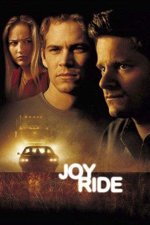
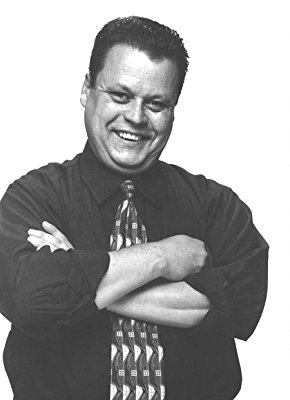

#2698 Joyride - Spritztour
Alternativ: Joy Ride
 
 IMDB-Wertung: 6.6 / 10
IMDB-Wertung: 6.6 / 10  Metascore: 75
Metascore: 75 
Der Student Lewis Thomas hat gerade Semesterferien und erfährt von seiner Jugendliebe Venna, dass sie soeben mit ihrem Freund Schluss gemacht hat. Also macht er sich auf, sie abzuholen und mit ihr in ihre Heimat zu fahren. Auf dem Weg zu ihr erfährt er von seiner Mutter, dass sein Bruder Fuller aus dem Gefängnis entlassen wird und holt ihn deswegen zunächst ab. Zusammen verarschen sie dann auf der Fahrt einen anderen LKW-Fahrer namens Rusty Nail per Funk und gaukeln ihm vor, sie seien eine schöne Frau und wollen sich mit ihm in einem Motelzimmer treffen. Im Motel angekommen, mieten sie sich ein Zimmer direkt neben dem, für das sie sich verabredet hatten. Am nächsten Tag erfahren sie, dass der Mann, der in dem Zimmer nebenan geschlafen hat, auf brutale Weise umgebracht wurde und bekommen es mit der Angst zu tun.
Jahr: 2001
Dauer: 97 Minuten
FSK: 16
Land: USA Studio: 20th Century FoxTonspuren: DD5.1 - ,
Untertitel:
Auflösung: 1080p (1920x816) Größe: 6983 MB
Genre: Thriller, Mystery
Regisseur: John Dahl
Drehbuch: Clay Tarver, J.J. Abrams
Soundtrack: Marco Beltrami
Darsteller:
 Steve Zahn als Fuller
Steve Zahn als Fuller Paul Walker als Lewis
Paul Walker als Lewis Leelee Sobieski als Venna
Leelee Sobieski als Venna- Jessica Bowman als Charlotte
- Stuart Stone als Danny, Lewis's Roommate
 Basil Wallace als Car Salesman
Basil Wallace als Car Salesman Brian Leckner als Officer Keeney
Brian Leckner als Officer Keeney- Mary Wickliffe als Salt Lake City Police Desk Clerk
-  Dell Yount als Gas Station Mechanic
- Michael McCleery als Officer Akins
 Jim Beaver als Sheriff Ritter
Jim Beaver als Sheriff Ritter Rachel Singer als Gas Station Manager
Rachel Singer als Gas Station Manager James MacDonald als Local in Nebraska Bar
James MacDonald als Local in Nebraska Bar- Hugh Dane als Man at Door
 Jay Hernandez als Marine
Jay Hernandez als Marine Walton Goggins als Cop, DVD additional footage , uncredited
Walton Goggins als Cop, DVD additional footage , uncredited Matthew Kimbrough als Rusty Nail , uncredited
Matthew Kimbrough als Rusty Nail , uncredited Ted Levine als Rusty Nail , uncredited
Ted Levine als Rusty Nail , uncredited- Chuck Murphy als Medic , uncredited
- Patrick Robert Smith als Cop , uncredited
- Vern Urich als Officer Alexander , uncredited
- Brien Varady als Paramedic, DVD additional footage , uncredited
- McKenzie Satterthwaite als Asst. Salt Lake City Police Desk Clerk
- Kenneth White als Ronald Ellinghouse
- Luis Cortés als Night Manager
- Satch Huizenga als Ice Truck Man
- Terry Leonard als Bartender
- Gwenda Deacon als Truck Stop Waitress
 Robert Winley als Truck Stop Manager
Robert Winley als Truck Stop Manager- Ali Gage als Waitress
- Jack Moore als Hotwire Consultant
- Lee Stepp als Traveling Salesman
- Huey Redwine als Policeman #1
- John Maynard als Policeman #2
- Peter Weireter als Policeman #3
- Tim Cooney als Voice Actor
- Sheryl Giffis als Voice Actor
- Pamela Senatore als Voice Actor
- Anna Malle als Porn Actress on Cable TV , uncredited
Datei: X:\2001\Joyride - Spritztour (2001, FSK16, 1920x816).mkv seit 03.12.2015
Festplatte: HD 1996-2002
 Es gibt insgesamt 102 Filme in der Gruppe '2001'
Es gibt insgesamt 102 Filme in der Gruppe '2001'